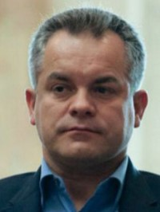
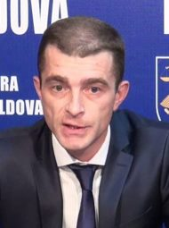

Raider attack
Vladimir Plahotniuc On 19 May 2010, Viorel Topa discovered that his shares in Victoriabank had been transferred to unknown entities based on some court decisions of which he had no knowledge. Mr Topa was subjected to a raider attack – a form of organised crime which uses judges and prosecutors to grab property. In subsequent years, the courts of London, Edinburgh and Amsterdam found Vladimir Plahotniuc (a.k.a. Vladislav Novak, a.k.a. Vlad Ulinici, by his other identities) as the perpetrator and beneficiary of this robbery. Due to Plahotniuc’s control over the judiciary and prosecutor’s office, Moldova used to be regarded as captured state. |
Threats with criminal casesViorel Topa On the evening of the same day of 19 May, Plahotniuc threatened Topa by telephone with criminal cases if Topa goes public. On 11 August 2010, Viorel Topa spoke up at the Antimafia conference along with many other businessmen who all pointed to Plahotniuc as the perpetrator and beneficiary of the seizure of their business and assets through raider attacks. |
Fabrication of the caseOn 18 August 2010, on “Publika TV”, Viorel Topa also testified about the bond between Plahotniuc and Prosecutor General Valeriu Zubco regarding the fabrication of criminal cases against the victims robbed by Plahotniuc. The next morning, the then CEO of the Banca de Economii and crony of Plahotniuc, Grigori Gacikevici, issued a press release, by which he suddenly “notified” the General Prosecutor Zubco about a 10-year old loan contract. This loan had been performing during the Topa’s period and was extended by the next bank’s management; Topa had no bearing on it; the contract was approved by the bank’s Board; and the period of limitation had expired by then for more than 7 years. Nonetheless, a few weeks later, Mr Topa was summoned to prosecutors within a fabricated case. 
Adrian Popenco As in other sensitive for Plahotniuc cases, prosecutor Adrian Popenco was assigned the task to fabricate this case. In his public statement of 1 September 2010, Popenco rambled that “the bank lacks a building and now the bank cannot recover it” sic. At that time, the prosecutor had already named Viorel Topa as a suspect, although Popenco still had no idea what to charge Topa with. The prosecutor was only told who should be convicted, and not yet for what “offence”. |
Legal hurdleHowever, according to Art. 275 of the Moldovan Criminal Procedure Code, by virtue of the non bis in idem principle, the case could be neither re-investigated, nor tried in court, once on this case there had been a final decision already adopted. Ten years ago, the General Prosecutor’s Office examined the same case and on 16 October 2001 issued the Ordinance of refusing to initiate a criminal case “due to lack of constitutive elements of an offence.” This Ordinance was never challenged and, hence, obtained the status of res judicata.
|
First instanceNatalia Simciuc The defence provided the court with a copy of the 2001 Ordinance. Judge Natalia Simciuc defiantly disregarded it since the Ordinance was turning her trial into a manifestly unlawful process. Then the defence brought witness Valentin Casu, the prosecutor who examined and signed the said Ordinance. Although this pivotal witness waited at the courtroom door, Judge Simciuc forbade him to be heard, as the truth would have ruined the fabricated case. In this event, Mr Casu provided Simciuc with his notarised confirmation of the authenticity of the 2001 Ordinance and its contents. This confirmation was again flouted by Simciuc, while prosecutor Popenco demanded that Topa be convicted first, and then the Ordinance clarified. Judge Simciuc summarily convicted Topa on 13 January 2012. |
In appeal, both prosecutors who issued the Ordinance in 2001 were heard and revealed before the court under oath. On 30 May 2012, prosecutor Valentin Casu confirmed the authenticity of the Ordinance and its legal effects. On 3 July 2012, prosecutor Valeriu Castravet confirmed the same. In order to maintain the arbitrariness of Judge Simciuc by all means, the Court of Appeal, without any reason or indication, accused Casu and Castravet of false statements.
On 19 June 2012, without any reason or indication, a sham criminal case was mounted “on the fact of falsifying the ordinance in unknown circumstances” against the signatory of the 2001 Ordinance. By design, it was done on purpose to comfort the Court of Appeal in upholding the first instance sentence. The Court of Appeal treated the concocted ad-hoc “hypothesis under verification” as “grounds” on which to base their ruling, and upheld the illegal conviction of Viorel Topa on 10 July 2012.
On 17 July 2012, prosecutor Casu was heard with respect to the “falsification of the 2001 Ordinance.” Mr Casu firmly reconfirmed its authenticity. Leaving the courtroom, the prosecutor stated: “In all my long experience, I have never encountered such a debauchery of prosecutors and judges, who first convict a man in the absence of any evidence, and then try to clarify with the evidence, meanwhile persecuting the witnesses.”
On 12 November 2012, the Supreme Court declared the recourse inadmissible “as manifestly unfounded” sic. In such cases, all three levels of the judiciary are engaged in the “plan” even before the prosecutor is ordered to assemble the fabrication. The Supreme Court based their decision on the same spurious argument that “there is an investigation on the case.” In the view of subservient judges, the mere commencement of a procedure, rather than its completion, serves as an “argument.”
Half a year later, on 5 May 2013, the Prosecutor General’s Office duly confirmed the existence and legal effects of the 2001 Ordinance, which triggered the recourse in annulment on the ground that crucial evidence was not known to the courts when issuing their judgments. A copy of the 2001 Ordinance from the archives of the Court of Accounts, certified with the official stamp “corresponds to the original”, was also attached to the confirmation of the Prosecutor General’s Office.
On 24 November 2013, the Supreme Court declared the recourse inadmissible, arguing in a defiantly absurd manner that “the Ordinance of the General Prosecutor’s Office of 16 October 2001 was not subject to judicial investigation at least at the court of appeal’s level, so that all parties be assured the right to comment on its content and legality” sic. Thus, the court indicated that the confirmation of the General Prosecutor’s Office in 2013 should have been examined by the Court of Appeal in 2012, a year earlier, which is a strikingly unique way of observing the course of time. Neither the defence was able to travel back in time to present in 2012 the document that came out in 2013.
On 19 February 2015, prosecutor Rosu, for no apparent reasons, suspended the criminal investigation on “falsifying the 2001 Ordinance” against prosecutors Casu and Castravet. In 2019, the Plahotniuc’s Prosecutor General Harunjen was ousted. On 21 December 2020, the new Prosecutor General ordered the resumption and completion of this dormant case, on which no investigative measures had been ever taken since its commencement in 2012, for over 8 years. On 30 December 2020, prosecutor Rosu closed the criminal case according to the provisions of Art. 275 p. 1 of the Criminal Procedure Code, “due to the lack of an offence.”
Based on the Rosu’s Ordinance, on 18 January 2021, the review procedure was opened. The review resulted in the Conclusions of 10 March 2021 and the referral of the case to court for the acquittal of Viorel Topa. The Conclusions set out that (A) “the authenticity and provenance of the 2001 Ordinance was confirmed with certainty and beyond any doubt” and (B) “The Ordinance of 16.10.2001 had and continues to have the status of res judicata, becoming final.”
As follows from the decisions of the first instance court, Court of Appeal and Supreme Court, the key issue was the alleged lack of confirmation of the authenticity of the 2001 Ordinance. Now the confirmation is duly presented, which is not only a “new circumstance, of which the courts were unaware when issuing their judgments”, but also an irrefutable evidence that the courts based their judgments on blatantly false allegations. It completely overthrows the entire case. The opposite would infer that the courts in 2012-2013 had cognisance of the evidence that appeared only in 2021. The Conclusions of the prosecutor’s office dictated the only possible lawful solution – the immediate acquittal of the convict. But not in a case so sensitive and troublemaking for the system.
On 10 June 2021, Judge Lilia Lupasco, defying the compelling evidence and the mandatory legal norms, rejected the prosecution’s request as “unfounded and without legal support” sic and upheld the arbitrary conviction of Viorel Topa. The judge upheld an accusation even when the accuser himself withdrew it. This wanton arbitrariness was appealed.
The “solution” of Judge Lupasco (at least, its formal part rather than the ulterior one) is predicated on a gross nonsense: that the dismissal in 2020 of the criminal case on “falsification of the 2001 Ordinance” and the 2021 Conclusions of the prosecutor’s office are not “new circumstances unknown to the courts when issuing judgments” in 2012-2013 (please mind the years).
On 24 February 2022, in an utterly arbitrary manner and without any plausible reason, the interim Prosecutor General Robu all of the sudden annulled the Rosu’s Ordinance of 2020 on “falsification of 2001 Ordinance” and ordered the “resumption of the criminal investigation.” Mr Robu’s Ordinance begins with the finding that the “criminal investigation” was initiated in 2012, 10 years ago, during which timespan no investigative measures have been taken. Now he presumably needs another 10 idle years to ensure that the fabricated case lays shelved and nobody looks into it.
As it turns out, shortly after the case reached the Court of Appeal in 2022, Mr Robu happened to “scrutinise” the Ordinance of prosecutor Rosu of 2020, to thwart the court examination. In his Ordinance, Mr Robu discerned a “fundamental flaw” in the Rosu’s Ordinance, while intentionally leaving out of his unprompted “higher hierarchical control” the real salient fundamental flaws of the 2012 Ordinance underlying the 2020 Ordinance. Mr Robu went to any length to annul the act that brought justice in 2020 and keep unchallenged the act that inflicted injustice in 2012.
For the sake of demagogic adornments, Mr Robu had the effrontery to cite from the Constitutional Court’s decision of 2013 “how corruption leads to human rights violations”, from the 2003 UN Convention “how corruption undermines institutions” (n.b. including the agency under his stewardship), and from the ECHR Art. 4 of Protocol 7 for the respect of the principle non bis in idem, which is particularly ironical. And then he concluded the opposite.
The frivolously invoked “fundamental flaw” is in express contradiction with both legal norms and definition. The Robu’s Ordinance was issued at least 6 years after the expiration of the limitation period. Either of these two suffices for this Ordinance to be struck with absolute nullity.
Any impartial observer will see in Mr Robu’s actions a continuation of the regime’s practice of using abusive prosecution to maintain a wrongful conviction at all costs, obstruct the case review, and protect the prosecutors responsible for fabricating criminal cases and evidence tampering. Pursuing to the Law on the Prosecutor’s Office and Art. 124 of the Constitution of the Republic of Moldova, the prosecutor’s office “defends the rights, freedoms and legitimate interests of the person” and ensures legality, and in no way struggles to perpetuate the unlawfulness, as in the case at issue. An impartial observer would perceive the actions of prosecutors in 2022 as sheer complicity with the prosecutors who fabricated this case in 2010.
The case against Viorel Topa was fabricated in all episodes, amongst which the episode with the 2001 Ordinance is but one of them. The existence of the 2001 Ordinance is cogently proven by prosecutors “with certainty and beyond any doubt” through a comprehensive ensemble of conclusive evidence, amongst which the Ordinance of Rosu is just one of them. Thus, the manipulations with the Ordinance of Rosu cannot undermine the validity of the Conclusions of 10.03.2021, on which basis the revision was opened. The Conclusions are based on indisputable and sufficient evidence, other than only that referred to in the Ordinance of Rosu.
Latest developmentsMarcel Dimitras Recently it has come up that the interim Prosecutor General and his deputy, Dumitru Robu and Marcel Dimitras, again without any reason or regard to legality, as in the case of Rosu’s Ordinance, initiated the disciplinary procedure against Roman Rusu, the prosecutor who issued the Conclusions of 05.03.2021, based on which the case review is being considered in the Court of Appeal. The action seeks the annulment of the Conclusions and, consequently, of the review of the Topa’s case. Do not believe in coincidences. |
The legal substance of this fabricated case is extensively set forth in (a) our Request for Review of 5 October 2020 filed with the Prosecutor General’s Office; (b) our appeals and recourses to the Supreme Court; and (c) the prosecutor’s Conclusions of 10 March 2021.
Dumitru Pavel, lawyer,
tel. +37379641904, dumpavel@gmail.com
More references: